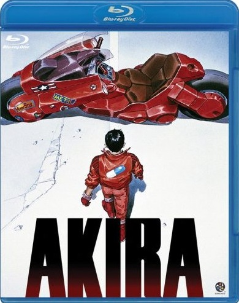

Studio:Bandai Entertainment, Bandai Visual, Honneamis
Running Time: 124 mins + 5 mins Extras
Release Date: Feb 24, 2009
Video codec: MPEG-4 AVC
Video resolution: 1080p
Aspect ratio: 1.85:1
Japanese: Dolby TrueHD 5.1 (Hyperspnic Effect)
Japanese: LPCM 2.0
English: Dolby TrueHD 5.1
Japanese: Dolby Digital 5.1
English, Japanese
Size: 50GB Blu-ray Disc
Region: Free